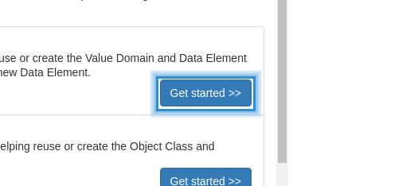
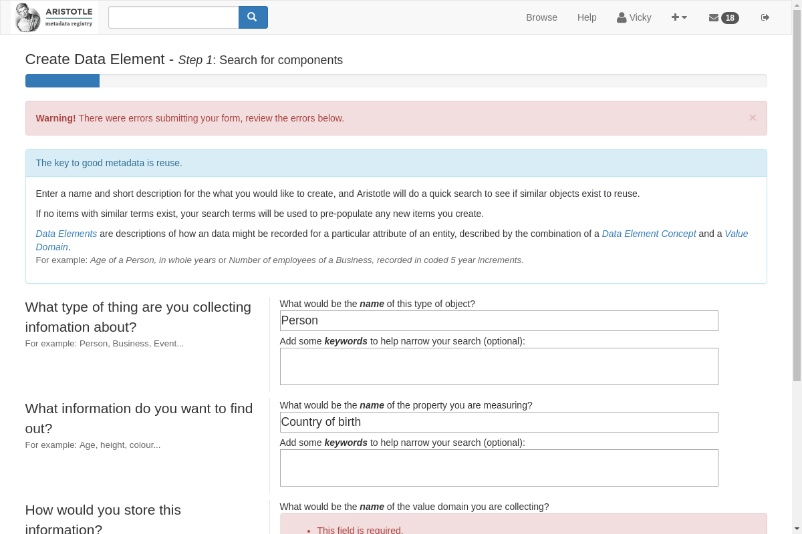
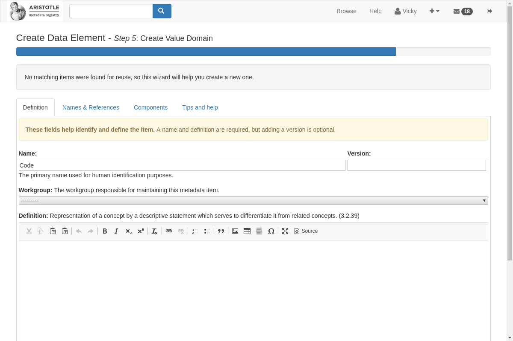

Using wizards to link metadata to create a data element¶
These wizards run through the creation of a whole data element, it helps you reuse already created items and/or create new object classes, properties, and value domains.
To access the creation wizards, go to “create metadata” on your Dashboard side panel or the creation drop-down menu on the header bar and select “See all..” to be taken to the Create Items page.
We are going to create a Data Element using a wizard. To start creating select “Get started”
This is the first step, to be helpful the wizard will try to help you find content that has already been created in the registry.
To proceed with creating a Date Element, it is required that you put in an Object Class name, a Property name, and a Value Domain name. Keywords are not required, but can be used to help narrow down the search results.
In step two, the wizard will show you results of different metadata items that have already been created. If you see a result that matches an item you need for creating the Data Element, you can select it and use it. If you get results that don’t match or you just want to create something new, you have to select “None of the above meet my needs” to proceed with the process.
Hint
Reuse of metadata is very important, this is why it’s beneficial to review the items that already exist in the registry.
We are going to be reusing the Object Class “person”, and selecting “None of the above meet my needs” for the Value Domain.

In step three we are going to be creating a Property, this is because we’ve selected the “person” Object Class on the previous page. The only field that is required is the “definition”. You can also add a “version” to the item, or select a “Workgroup”.

In step four the Object Class and Property will come together to form a Data Element Concept. This will be an “autogenerated definition” you can review and edit however you would like in this step.

Now we are going to create the Value Domain for the Data Element.
In step six, you will be able to review the whole Data Element. The definition will be autogenerated, but you can edit it however you would like.

After reviewing the Data Element and selecting “next”, you will be taken to a page that will let you see all the new items you are about to create. You can go back and edit if necessary, or select “I’ve reviewed these items and wish to create them.” This is required, after selecting that you can click “next” and you new items will be created. You will be taken to the new Data Element page, where you will be able to see all the connections between the different items created.